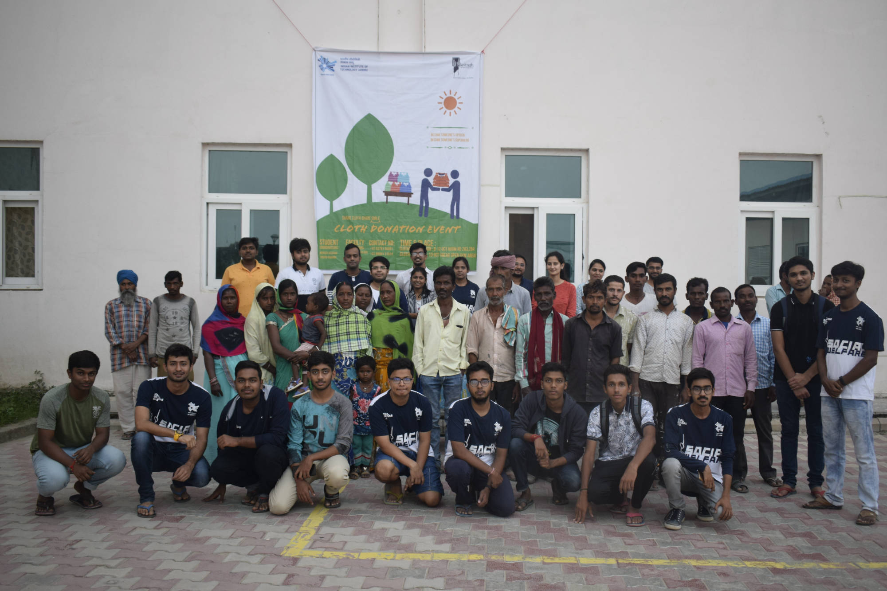

NSS IIT Jammu
NSS is the student body of IIT Jammu that upholds humanity and works for its betterment via social activities
-
- 
-


For some, IIT itself, is their world. However, there is a lot more to explore outside the classroom and the campus. The NSS Cell at IIT Jammu is trying to provide students with opportunities to explore the world they may not know exists. The NSS program aims to not only familiarize students with different communities and groups around them but also let them explore nature through treks and camps. Students can volunteer to teach kids how to play the Guitar or teach WhatsApp video calling to the elderly.
Click on Image to know More

Visiting Faculty
IIT Jammu
Assistant Professor
IIT Jammu

Assistant Professor
IIT Jammu